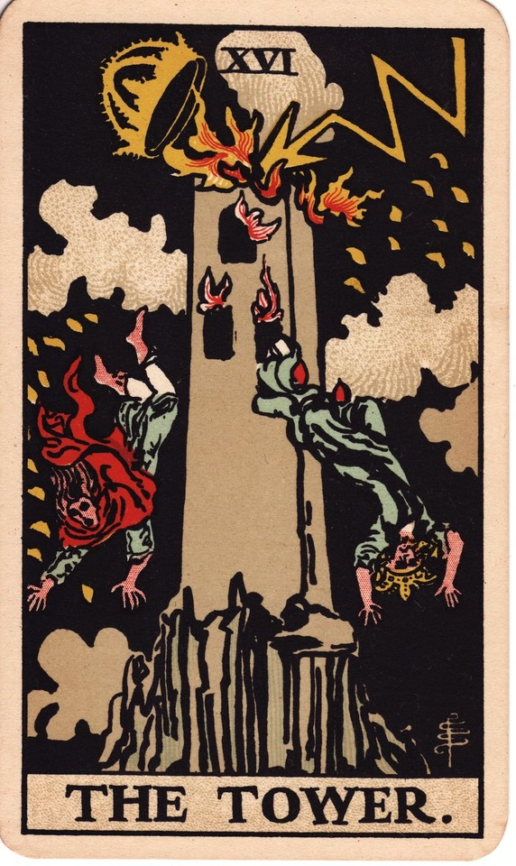
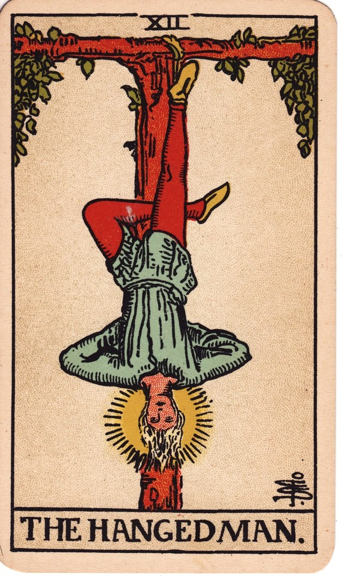
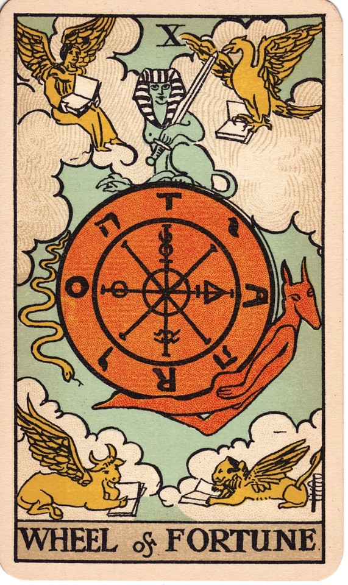

Layoffs and YOU:
Surviving Your own Personal Economic Apocalyse
A blog. Also, a subjective guide to navigating potential unemployment in the modern day
By: John Hamill
Don't panic, its just the apocalypse
So,
You think you might be faced with layoff or furlough? Let me guess, some bull s@&! that is way beyond your control huh?
The Oxford dictionary defines apocalypse as, "a disaster resulting in drastic, irreversible damage to human society or the environment, esp. on a global scale; a cataclysm."
But the latin root Apocalypsis means to un-cover; to disclose.
Let's think instead about what furloughs/layoffs could unveil for your own life.
The facts as I see them
Have you known anyone who was either furloughed or laid-off? Odds are, if you're a working-age American, the answer is yes. You might've even been through it yourself. It's apparently a regular and inevitable occurence. There are also much stupider reasons for instability, like the people elected to run the government failing to actually run the government, or new CEO's deciding to summarily fire 90% of a company. Anyway, you get the picture.
Although, it is a truly awful thing to experience, it could also be an opportunity for you to find a better employer, change careers, or even start your own business. You see, chaos is really opportunity, disguised as a big scary wolf that is simultaneously on fire, and standing on its hind legs like some eldritch beast.
I have lived through this experience twice in my professional career, and although I do not wish this on anyone, I hope that I can help you prepare for your own economic apocalypse with the lessons I've learned.
Keep your ear to the ground
Pay attention to the relevant news that might affect your company. For instance, if your company generates a majority of revenue from federal contracts, you'd be advised to pay attention to current news about approving the Federal Budget. Time to start brainstorming what you will do if things don't improve. At the first murmur of lay-offs, furloughs, or otherwise in your company--start developing your plan with haste. At this stage, there's no reason for you to panic, but there is reason for you to plan! Survey your surroundings and have your escape plan established before you get that dreaded red letter.
In 2020, I was employed as a GIS analyst for a multinational defense firm. We had about 20 people working in the GIS department our offices in Saint Louis, and then about 150 in the same department in the D.C. area. So, I knew, if and when cuts came, it would likely not be good for our offices(**Assess your vulnerability**). I also knew that the NGA (Federal agency we primarily contract with) had been trying to shift their contract awards to smaller firms for a couple years, and it looked like that was their strategy for the forseeable future. With this information, a clear path to safety was finding work with a smaller GIS firm in the area (**Find your escape route**).
Again, this was all considered prior to the announcement that furloughs/layoffs were incoming, and long before notice was served. So, the moment they told us all that cuts would have to be made, I knew a) I was on the chopping block, b) where I was going to go when news came. More importantly, I did not have any reason to panic, because I was realistic about my situation. I was able to find and start a job that paid more, at a mid-level GIS firm, two whole weeks before my old employer cut 16/20 of my former co-workers from payroll.
Remember these steps when hard times are evident:
- Stay calm, prepare
- Assess your vulnerability logically
- Know your escape route.
- Don't wait for bad news to arrive, get ahead of it.
Create with chaos
Maybe you were already feeling like it was time for a career change before the universe heaped this pile of crap on you. A principle quality of crap, is--fertility! Maybe you were tired of working for someone else altogether and were ready to open that cake shop you and your friends always daydream about*. Consider this moment as your opportunity to jump!
Now I have been planning to learn programming for several years. As fortune would have it, I had mistakenly applied to a full-time (instead of part-time) course at Launchcode, and been accepted in October 2023. I briefly reviewed my finances for the next few months if I quit my job, and determined that I could (ital), actually afford to join the class. I did not at the time, because it would have given my employer only a few days notice of my departure, and it was going to be tight as far as my savings were concerned. Flash to 2 weeks later, and we were notified of coming furloughs due to government budgets being tied up in congress. I think you know what happened from there, but I saw an oportunity to...
Do something a little CrAzY
*Literally opening cake shops may not be a good course of action in all economic circumstances. Results may vary
Be brave and believe in yourself
So, I was going to ask my employer if I could volunteer to go on furlough in order to join launchcode, the outcome of which would very likely not be returning to work if/when the furloughs were lifted. I knew this and my employer would know it as well. Which brings us to a very important skill in these situations: framing.
I needed to frame this as an opportunity for both sides of the table, perhaps play on the emotions of my employer to win a favorable reply to my proposition. It became a simple equation of mirroring my own motivations to be something that could benefit my employer as well. I lead with a lot of ass kissing frankly, which in this case was sincere. But fake it if you need to, this is about survival, not true honesty. Keeping my insurance and holiday pay would significantly ease some of my risk in the situation, so by all means do what you have to to keep any advantages you can. Also, you might wanna have your umemployent benefit forms, and alternate insurance filled out before you take the leap and talk to your boss.
Here's a general outline of the converstation with my CEO
- Kiss some ass
- Acknowledge the 'suck' of the situation
- "Look, I know you do not want to have to furlough any of us, especially close to the holidays"
- notice the emotional appeals
- Before the big ask, acknowledge that you have prepared yourself for any outcome of this conversation
- Don't list outcomes, just state it.
- Actually know what a 'no' will mean to your plan. They might say you were not on the list to be furloughed at all, we want you to stay working or you're fired.
- Explain what you want to do, and how you will selflessly take a blow for the company and your co-workers
- "This is the opportunity I have, and I hope that by me pursuing it, someone else on the team can stay paid through the holidays"
- "I've looked at my finances, and if I tighten the belt a bit, I can do this."
- Play those heart strings!
- Have an open and honest discussion
- No script here, except I told him I was open to working with them as a developer in the future
- Regardless of outcome, stay calm knowing you already have this planned out
Do the thing and do it well!
This is a really tough economic climate for many of us in the U.S. I know that some of this material may seem pretty ruthless and manipulative, but we are talking about capitalism, and you need to play like a capitalist to eat. So, my overall advice when facing furlough or unemployment is get creative! It's a game with real stakes, but a game all the same. Set your strategy before the cards fall, and follow through with it. This might just be the universe's way of kicking your lazy butt to the path you've been looking at for years. Make a good story of it!
As far as my story went, my employer did actually agree to my offer, and is keepin my benefits while going to LaunchCode for Web Development training, for now at least. I started the program 2.5 weeks late and have worked incredibly hard to catch up, but it's going well. It's an equally invigorating and exhausting time in my life, but I really do feel driven. I was incredibly lucky that I had a foot in the door with LaunchCode already, and that my CEO is a great guy. If you are reading this, I hope you can take some lessons from my circumstances, should you ever face such decisions.